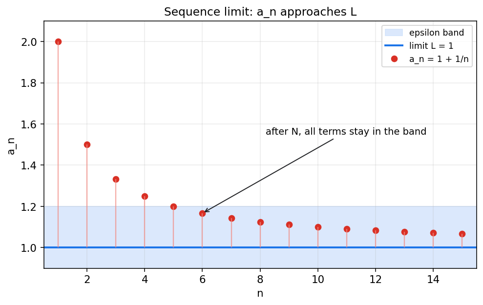
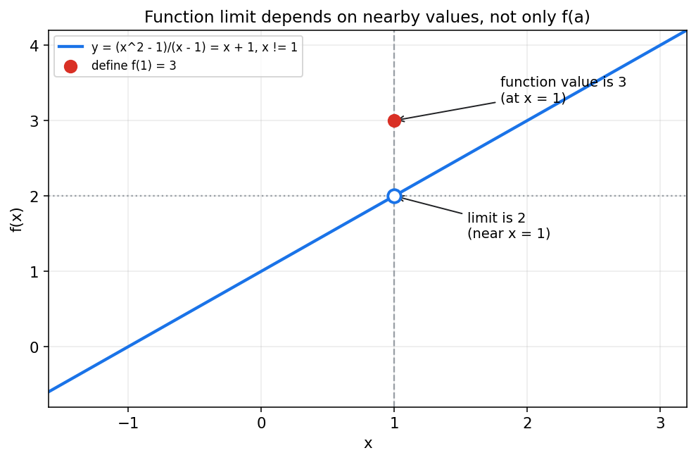
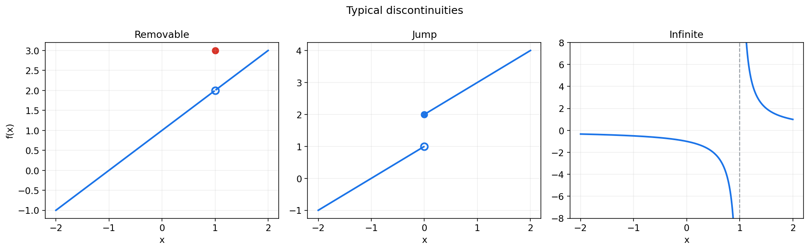
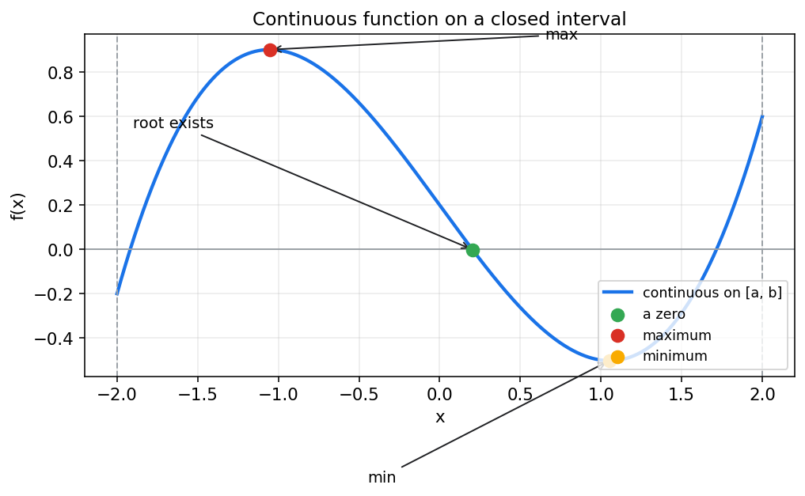

Chapter Map
0. 先看全章主线
这一章看似内容散, 实际上只有一条线: 先有函数, 再讨论靠近, 最后讨论是否接得上.
Object
1. 从函数开始: 高数到底研究什么
函数不是一条曲线那么简单, 它首先是一套输入到输出的确定规则.
对定义域 $D$ 中的每一个自变量 $x$, 函数都唯一对应一个函数值 $f(x)$. 高数里的导数, 积分, 极限, 连续, 都必须附着在这样的对应关系上.
设 $f(x)=\sqrt{1-x^2}$, 要先满足 $1-x^2\ge 0$.
所以它只在 $[-1,1]$ 上有定义. 以后很多"极限不存在"或"函数不连续", 根子都在定义域没看清.
Discrete Limit
2. 数列极限: 先在离散世界里学会"趋近"
数列是特殊的函数: $n\mapsto a_n$. 它让我们先在一个个离散点上理解"越来越接近".
典型例子是 $a_n=1+\frac{1}{n}$. 当 $n$ 越来越大, 数列项越来越靠近 1, 但并不要求真的等于 1.

Function Limit
3. 函数极限: 从离散趋近走向连续趋近
函数极限真正关心的是 $x$ 靠近某点时, 附近的函数值会不会稳定靠近某个数.
这句话的重点是"靠近 $a$". 函数在 $a$ 点是否有定义, 或定义成什么值, 不一定影响极限.

设 $f(x)=\frac{x^2-1}{x-1}$, $x\ne 1$. 化简得 $f(x)=x+1$, $x\ne 1$.
如果额外规定 $f(1)=3$, 那么 $f(1)$ 是 3, 但极限仍然是 2. 极限看附近, 不看当点.
Special States
4. 无穷小与无穷大: 给特殊极限状态命名
无穷小和无穷大不是普通数值, 而是极限过程中的状态.
Computation
5. 极限运算法则: 为什么大多数题都能算出来
定义解释"是什么", 运算法则解决"怎么算". 真做题时, 不会每题都回到 $\varepsilon$-$\delta$.
| 运算 | 条件 | 结论 |
|---|---|---|
| 和差 | $\lim f=A,\ \lim g=B$ | $\lim(f\pm g)=A\pm B$ |
| 积 | $\lim f=A,\ \lim g=B$ | $\lim(fg)=AB$ |
| 商 | $\lim g=B\ne0$ | $\lim\frac{f}{g}=\frac{A}{B}$ |
| 连续函数 | $f$ 在 $a$ 处连续 | $\lim_{x\to a}f(x)=f(a)$, 可直接代入 |
$\lim_{x\to2}(x^2+3x-1)$ 可直接代入, 因为多项式处处连续.
如果代入后出现 $\frac00$ 或 $\frac{\infty}{\infty}$, 再考虑约分, 有理化, 通分, 夹逼或重要极限.
Existence
6. 极限存在准则与两个重要极限
这一节回答两类问题: 有些极限为什么一定存在, 有些标准极限为什么能直接调用.
Infinitesimal Comparison
7. 无穷小的比较: 学会看主导项
这一节让求极限从"机械变形"走向"看结构". 关键是判断谁比谁小, 谁和谁等价.
| 关系 | 判断 | 含义 |
|---|---|---|
| 同阶 | $\lim\frac{\alpha}{\beta}=c\ne0$ | 二者量级相同, 常数倍不同. |
| 等价 | $\lim\frac{\alpha}{\beta}=1$ | 可记作 $\alpha\sim\beta$. |
| 高阶 | $\lim\frac{\alpha}{\beta}=0$ | $\alpha$ 比 $\beta$ 小得更快. |
| 低阶 | $\lim\frac{\alpha}{\beta}=\infty$ | $\alpha$ 比 $\beta$ 大得更明显. |
Continuity
8. 连续: 当"极限"和"函数值"真正接上
连续不是口号, 它要求函数值存在, 极限存在, 且二者相等.

Global Results
9. 闭区间上连续函数的性质
当条件变成"在闭区间 $[a,b]$ 上连续", 我们得到的是全局性质, 不只是某点附近的性质.

要说明 $x^3+x-1=0$ 在 $(0,1)$ 内有根, 设 $f(x)=x^3+x-1$.
多项式在 $[0,1]$ 上连续, 两端异号, 因此 $(0,1)$ 内至少有一个零点.
Examples
10. 例题与自测
下面的题目覆盖定义域, 极限, 等价无穷小, 连续性和零点定理. 答案默认折叠, 适合自查.
设 $f(x)=\begin{cases}\frac{x^2-1}{x-1},&x\ne1\\ k,&x=1\end{cases}$, 求使 $f$ 在 $x=1$ 连续的 $k$.
连续要求 $f(1)=\lim_{x\to1}f(x)$, 所以 $k=2$.
自测 1: 求 $\lim_{x\to0}\frac{\sin 3x}{x}$
$\sin 3x\sim 3x$, 所以极限为 3.
自测 2: 求 $\lim_{x\to0}\frac{\sqrt{1+x}-1}{x}$
有理化后为 $\frac{1}{\sqrt{1+x}+1}$, 极限为 $\frac12$.
自测 3: 判断 $f(x)=|x|$ 在 $x=0$ 是否连续
$f(0)=0$, 且 $\lim_{x\to0}|x|=0$, 因此连续.
自测 4: 说明 $x^3-2x+1=0$ 在 $[0,1]$ 上是否至少有根
设 $f(x)=x^3-2x+1$. $f(0)=1$, $f(1)=0$. 由于 $x=1$ 已经是零点, 在 $[0,1]$ 上至少有根.
自测 5: 求 $\lim_{x\to0}\frac{1-\cos 2x}{x^2}$
$1-\cos 2x\sim\frac{(2x)^2}{2}=2x^2$, 所以极限为 2.
Checklist
11. 做题时的实战清单
把下面几组问题变成固定动作, 第一章题目的稳定性会提高很多.
求极限
- 先看定义域和极限点是否合法.
- 先试直接代入, 连续函数优先代入.
- 出现未定式时, 再考虑因式分解, 有理化, 通分, 夹逼.
- 识别重要极限和等价无穷小, 但警惕加减结构乱替换.
判连续和证明有根
- 连续只查三件事: 函数值存在, 极限存在, 二者相等.
- 总体极限存在必须左右极限相等.
- 看到闭区间连续, 优先想到有界, 最值, 介值, 零点定理.
- 证明有根常用条件: 闭区间连续, 两端函数值异号.
第一章真正该记住的几句话
函数是研究变化的对象. 极限研究的是"靠近时怎样", 不是"取到时怎样". 连续意味着附近趋势和点上取值没有断开. 在闭区间上连续, 函数就会表现得非常规矩.
本页为同济高等数学第一章 HTML 教程. 下一章进入 导数与微分, 继续追问函数在某一瞬间如何变化.